MotionLayout 介绍 (Part IV) 深入理解关键帧
介绍
MotionLayout 是一个来自 ConstraintLayout 2.0 的专注于动画的新布局。本系列的前几篇文章对该系统进行了很好的概述。我强烈建议你在阅读本文前先去查看它们。
- Introduction to MotionLayout (part I)
- 中文点这 Custom attributes, image transitions, keyframes (part II)
- 中文点这 Taking advantage of MotionLayout in your existing layouts (CoordinatorLayout, DrawerLayout, ViewPager) (part III)
MotionLayout 动画系统通过在两种状态之间插入值（通常是控件的位置/大小）来工作，这些值是使用 ConstraintLayout 的约束系统 (ConstranitSets) 以及视图属性来指定的。这两种状态之间的转换也可以完全由触摸事件驱动。这个系统通常会为你的过渡提供很好的效果。
除了上面说的状态之外，MotionLayout 还支持关键帧（在本系列的第二部分中简单介绍过），我们将在本文中深入介绍这些关键帧。注意，虽然关键帧很好，但是它绝对是一个更专业的工具；你可能不需要或者偶尔才会用到。
请记住，在应用中添加的动画应该有它的意义；不要滥用！
但是，如果需要对你的过渡效果添加额外的功能，那么关键帧可以帮助你扩展 MotionLayout 的功能。如你所见，这里有很多内容需要覆盖：
- 关键帧 Keyframes
- 位置关键帧 Position Keyframes
- 曲线动作 Arc Motion
- 时间模型 Easing
- 属性关键帧 Attributes Keyframes
- 循环关键帧 Cycle Keyframes & TimeCycle Keyframes (which we will cover in part V)
上手关键帧(a Rendez-vous in Time)
从较高的层次上看，关键帧可以对你的两个状态之间的插值进行一个修改。
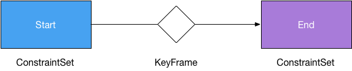
MotionLayout 支持不同的关键帧：
- 位置关键帧 Position keyframe :
KeyPosition - 属性关键帧 Attribute keyframe :
KeyAttribute - 循环关键帧 Cycle keyframe :
KeyCycle - 周期关键整 TimeCycle keyframe :
KeyTimeCycle
注意，每种类型的关键帧都是独立于其他类型的关键帧的——也就是说，你不需要在相同的点上定义所有的关键帧（但是你不能在相同的点上定义相同类型的多个关键帧）
通用属性
所有关键帧（位置、属性、循环、周期）都有一些关键的通用属性：
- 节点
motion:framePosition: 关键帧在过渡中（从0到100）的作用时机 - 目标
motion:target: 哪个对象受该关键帧影响 - 插值器
motion:transitionEasing: 使用哪种插值器（默认为线性） - 曲线拟合
motion:curveFit: 样条（默认）或线形——使用哪个曲线拟合关键帧。默认情况下是单调样条曲线，这使得过渡更加平滑，当然你也可以决定使用线性 (linear) 拟合。
位置关键帧
位置关键帧可能是你最常使用到通用关键帧。它允许你修改控件在过渡期间在屏幕上的路径。举例，让我们在 MotionLayout 中为其中的一个控件做动画：
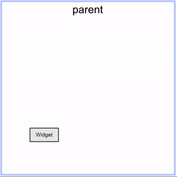
我们有一个起始状态(左下)和结束状态(右上)，过渡过程就是控件在这两种状态之间的线性 (linear interpoltion) 直线运动。
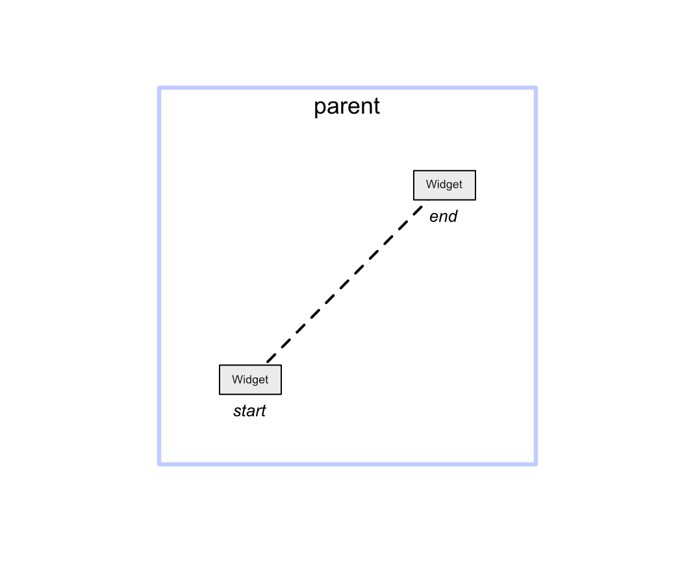
通过引入位置关键帧，我们可以将运动路径变成曲线运动：
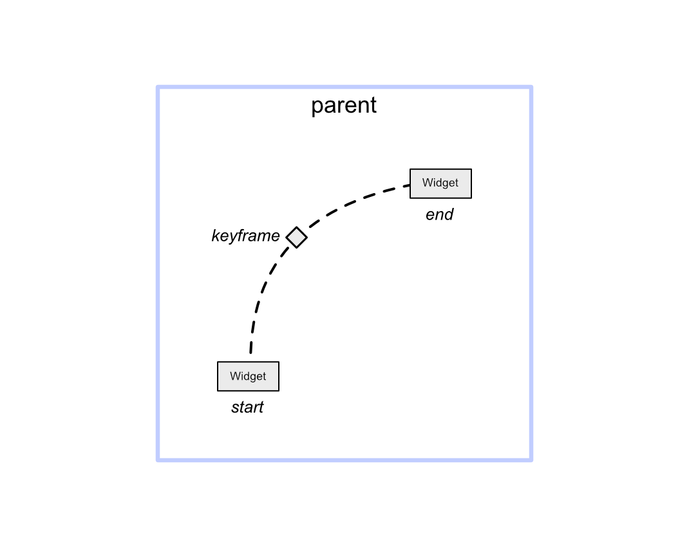
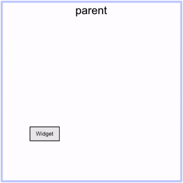
添加更多的关键帧允许你创建复杂的运动路径。
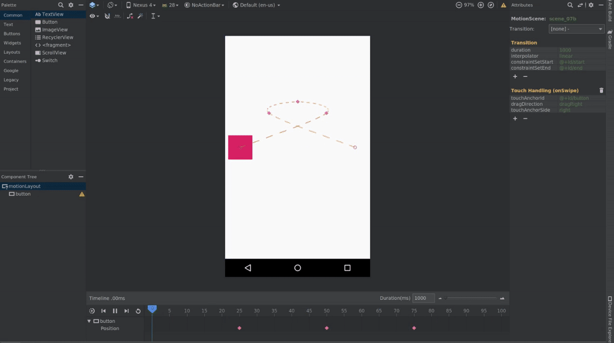
<KeyFrameSet> |
什么是位置关键帧？
如果 ConstraintSets 已经允许你以非常灵活的方式摆放控件，那么你也许会问自己定位关键帧的意义是什么。原因如下：
- 关键帧表示临时修改，而 ConstraintSets 表示“静止 (resting) ”状态
- 关键帧在计算中相对于 ConstraintSet 更加轻量级
- 位置关键帧允许你对一个控件的运动路径进行操纵 —— ConstraintSets 则是指定一个控件相对与其他控件的位置。
注意：在一个 MotionScene 中定义多个 ConstraintSets 是有可能的，所以如果你有一个多步骤的动作，其中这些步骤是有效的“静止”状态，那么你可以使用它们而不是关键帧。状态到状态的转换必须在代码中完成（可以使用改动监听器(change listeners)）。
使用 XML 表示
关键帧存在于 <KeyFrameSet> 属性中，<KeyFrameSet> 则存在于 MotionScene 文件中的 <Transition>，并且至少包含：
target: 被关键帧影响的控件framePosition: 关键帧使用时机，(0-100)keyPositionType: 所使用的坐标系相对父容器(parentRelative), 三角定位(deltaRelative), 相对路径(pathRelative)percentX / percentY:位置的 (x,y) 坐标
<Transition ...> |
不同的坐标系
在 MotionLayout 中的起始状态和结束状态允许复杂的定位。对于 ConstraintSets，它们可以使用 ConstraintLayout 的所有功能。系统将根据密度 (density) 、屏幕方向(screen orientation)、语言(language) 等变化，正确的处理这些状态。
要使关键帧在这样的系统中发挥作用，我们需要它们能够以类似自适应的方式进行布局——而不是简单的使用固定的位置。
为了解决这个问题，同时保持关键帧系统的轻量级，我们提出了一种灵活的方法——在给定的坐标系中，每个关键帧的位置用（x,y）坐标对 (pair) 表示：
motion:percentX=”<float>”motion:percentY=”<float>”
这个坐标的含义取决于所使用的坐标系类型：parentRelative, deltaRelative, or pathRelative.
注意：每个关键帧的位置都是单独存在——每个关键帧的位置都可以用它们自己相对的坐标系表示。
相对父容器（parentRelative）
坐标是根据相对父容器表示的。这是一种非常直接和直观的方式来表达关键帧的位置，通常就足够了。通常情况下，你用它来做与父容器相关的大范围运动。
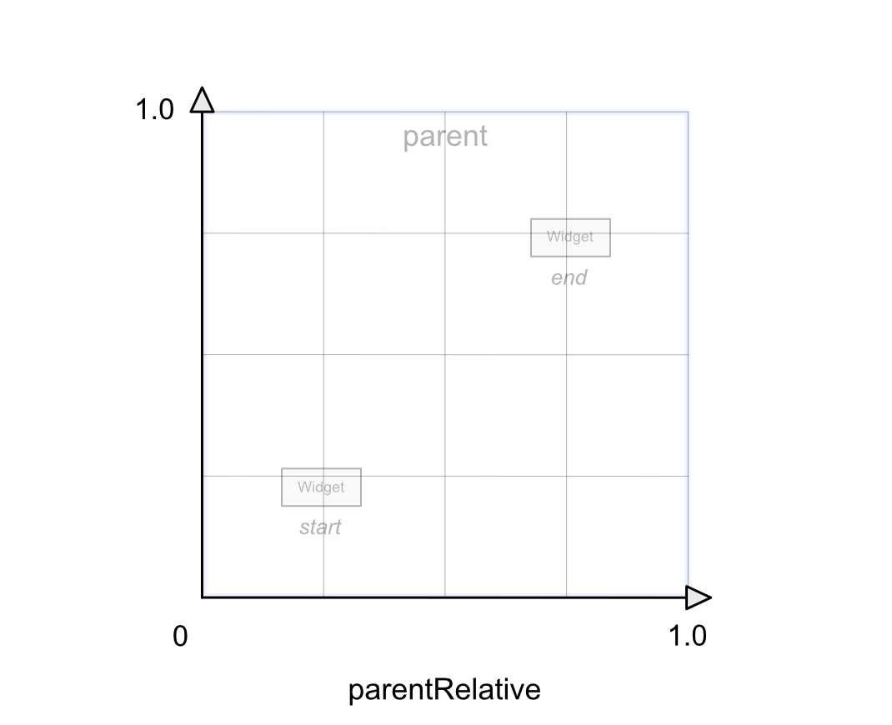
由于这个坐标系只基于父容器维度，而不是移动的控件的开始/结束位置，您可能会遇到这样的情况，即最后的关键帧位置以次优位置结束(相对于开始/结束位置)。（原文： you may encounter situations where the resulting keyframe position ends in a suboptimal position (relative to the start/end positions).）
三角定位（deltaRelative）
第二个坐标系通过使用开始/结束位置定义来解决这个问题。坐标表示起点和终点之间的百分比。
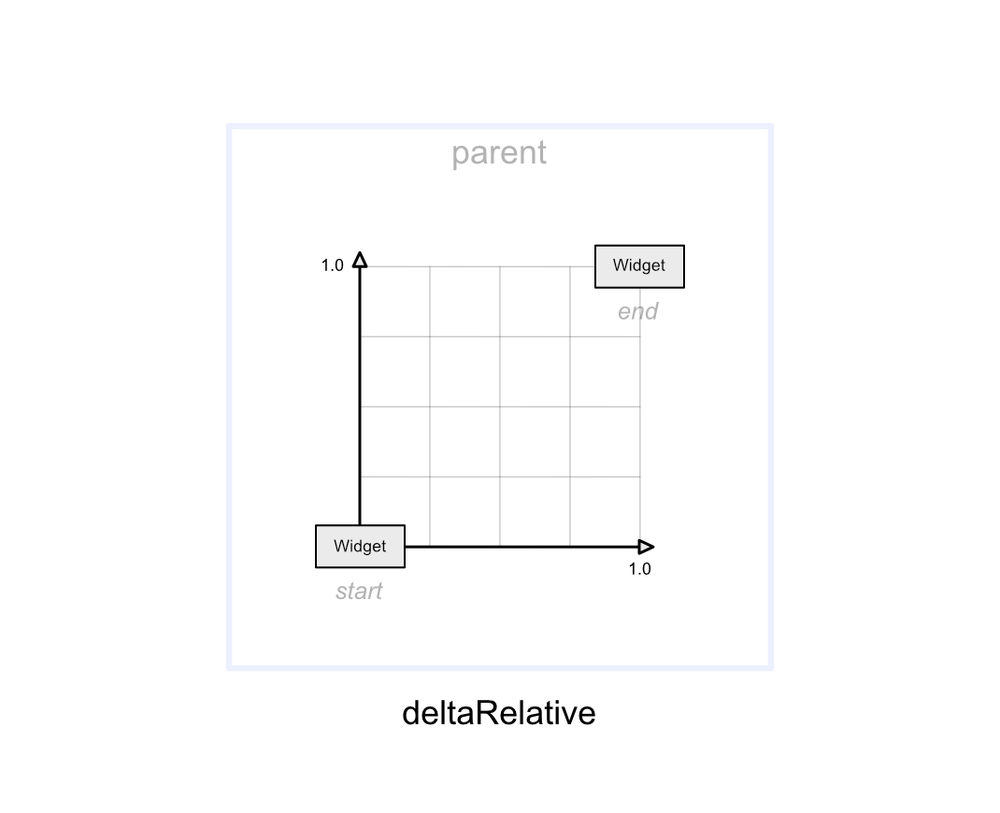
和相对父容器坐标系有点像，这是一个相对直观的坐标系统，一般也会给出很好的结果。当你希望控件以水平或垂直运动开始或结束时，它十分有用。
它有一个潜在的问题——因为它是根据控件从开始到结束位置之间的差异定义的额，如果差异非常小（或者没有）关键帧将不会在对应轴上发生变化。例如，如果控件在屏幕从左向右移动，而保持在相同的高度，那么对位置关键帧使用 deltarelative percentY 将不会产生任何效果。
相对路径（pathRelative）
最后一个坐标系定义了一个相对于从开始状态到结束状态的直线路径。它可以解决 deltaRelative 坐标系中的问题——当一个控件没有在垂直轴移动的情况下，使用 pathRelative 将允许将位置关键帧设置为偏离路径。注意，它也支持负坐标。它是一个更特殊的坐标系，但是在处理时间上特别有用。下面有一个例子是实现一个曲线形状（比如“S”形），即使端点发生变化，它也会保持不变。
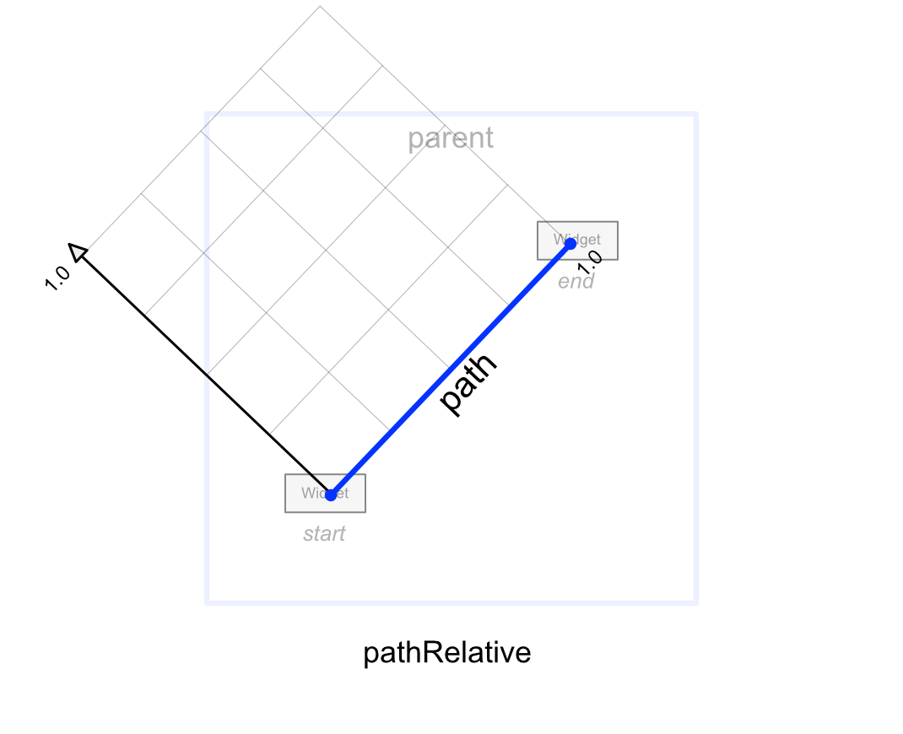
Arc Motion
在 Material Design 中使用的一种典型的运动类型是圆弧运动(arc motion)。使用 MotionLayout 创建圆弧运动的一种方法是在起始位置和结束位置之间添加正确放置的位置关键帧，如前一节所述。
在 ConstraintLayout 2.0.0 alpha 2 中，我们引入了一种实现完美圆弧运动的新方案——而且它更加容易使用。你只需要将motion:pathMotionArc 属性添加到起始的 ConstraintSet ，从而让默认的线形运动 (linear motion) 切换到弧线运动 (arc motion) 。
让我们来看一个简单的例子，开始状态是屏幕的右下，结束的位置是屏幕的顶部并且水平居中。添加下面这个属性就可以产生弧线运动：
motion:pathMotionArc=”startHorizontal”
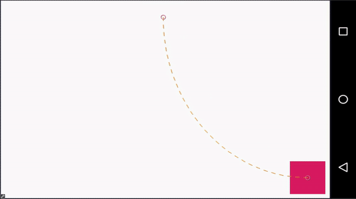
如果把属性换成：
motion:pathMotionArc=”startVertical”
就会改变弧线的方向：
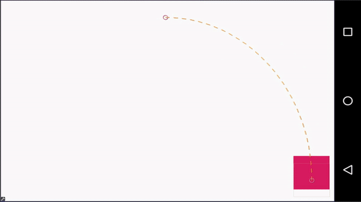
你仍然可以使用位置关键帧来创造更复杂的弧线路径。下面是结果：
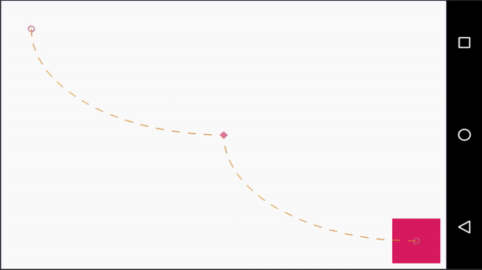
它是通过在动画中添加一个垂直居中的位置关键帧来实现的：
<KeyPosition |
通过设置 motion:pathMotionArc 属性，还可以在该场景中使用关键帧来更改圆弧的方向。属性可以是flip （翻转当前的圆弧方向）、none （还原为线性运动），也可以是startHorizontal 或startVertical。
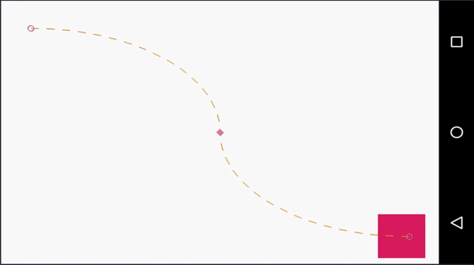
<KeyPosition |
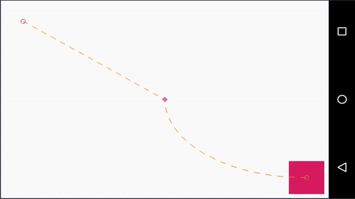
<KeyPosition |
时间模型（Easing）
在前几节中，我们介绍了各种机制帮助你定义一个运动路径。对于一个动画，不仅仅需要选择合适的路径；时间也是至关重要的。
由于位置关键帧可以由时间指定，你可以使用它们来定义控件移动的快慢，具体取决于移动的空间。
但是在一个单独片段内——开始和结束状态之间，或者在关键帧之间——时间插值器是线形的。(the time interpolation is linear)
你可以使用motion:transitionEasing 属性来指定一个缓和曲线来修改它。你可以将这个属性使用在ConstraintSets 或 关键帧，它接受这些值：
cubic(float, float , float, float), x1,y1,x2,y2 表示一个从 0,0 到 1,1 的三次贝塞尔方程的控制点- 或使用关键字:
standard,accelerate,decelerate, 预定义的曲线类似 Material Design definitions.
标准曲线（Standard easing）
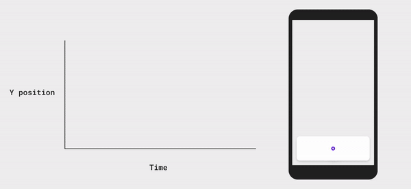
通常用于在非触摸驱动的动画中。它最适合于开始和结束都是静止状态的元素。
加速曲线（Accelerate easing）
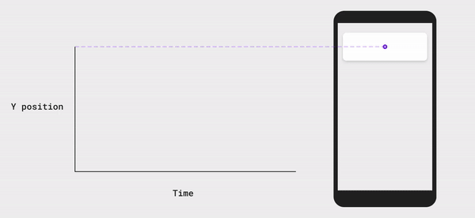
加速通常用于一个元素移出屏幕。
减速曲线（Decelerate easing）
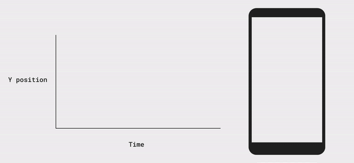
减速通常用于一个元素进入屏幕。
键属性（KeyAttribute）
属性关键帧允许你在动画过程中指定控件的属性在给定时间点的更改——换句话说，它们与位置关键帧类似，但作用于属性而不是位置。
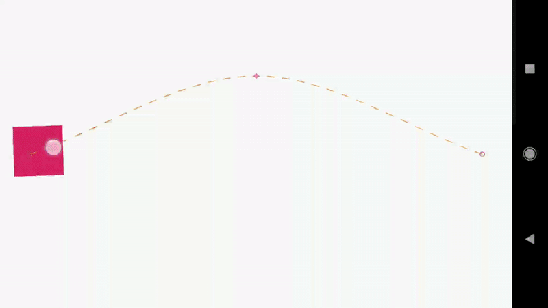
上面的例子通过在 MotionScene 文件中添加 KeyAttribute 元素来实现：
<KeyFrameSet> |
相比于KeyPostion，我们需要指定framePosition（关键帧应用时机）和目标（哪个对象受到影响）。
支持的属性
一些你开箱即用的 View 属性：
android:visibility, android:alpha, android:elevation, android:rotation, android:rotationX, android:rotationY, android:scaleX, android:scaleY, android:translationX, android:translationY, android:translationZ
重点
受到应用程序的 SDK level 限制，其中一些属性将不起作用：
- SDK 21 引入的
android:elevation - SDK 21 引入的
android:translationZ
自定义属性（Custom Attributes）
你可以通过添加 <CustionAttribute> 子节点在 ConstraintSets 和 KeyAttribute 节点中声明自定义属性。这个节点需要一个属性名（attributeName），它是getter/setter的名称（除去set/get前缀）和要传入或使用的值类型，属性类型指定为下方其中一个：
customColorValue: 颜色值customColorDrawableValue: 颜色值 DrawablecustomIntegerValue: IntegercustomFloatValue: FloatcustomStringValue: StringcustomDimension: 尺寸customBoolean: Boolean
举例，这面是对应上面动画的 XML：
<ConstraintSet android:id="@+id/start"> |
总结
本文介绍了 MotionLayout 中 最常见的关键帧和路径规范。我们将在本系列的第五部分讨论 循环（KeyCycle）和 周期（KeyTimeCycle），它们介绍了一种非常强大的方法，可以将扰动（类似波形）添加到属性（基于路径或基于时间），允许各种有趣但可预测的循环效果（反弹(bounce)、抖动(shaking)、脉动(pulsations)等）。
使用 MotionLayout 的各种示例可以在 ConstraintLayout examples github repository查看。